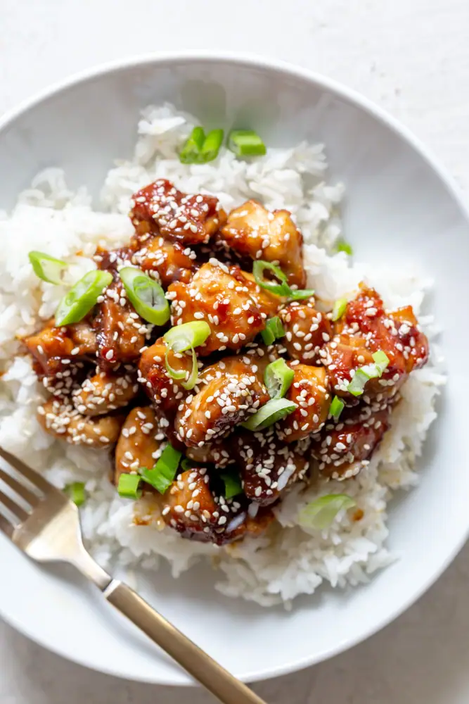

Simple Sesame Chicken Recipe

Description
Sesame Chicken is a crispy, sweet and tangy chicken recipe often found in Chinese restaurants in the United States. Although the chicken is often deep fried to make it crispy, this recipe skips the breading to make it faster, easier and a little healthier.
Ingredients
- 1.5 pounds chicken thighs (boneless, skinless, cut into 1 inch pieces)
- 1 tbsp canola oil
- 2 tsp Sesame seeds
- 1 bunch green onion
For Sauce:
- 1/4 cup low sodium soy sauce
- 1/3 cup brown sugar
- 1 tbsp rice vinegar
- 1 tbsp toasted sesame oil
- 1 tbsp grated ginger root
- 4 garlic cloves minced
- 1 tsp sriracha
- 1 tbsp cornstarch
Steps
- Whisk together ingredients for sauce, set aside.
- Heat a oil in a large sauté pan over medium high heat.
- When oil is hot, add the chicken. Sear until browned on one side, then flip and repeat on the second side, until chicken is cooked through, about 5 minutes per side.
- Add sauce, cook for 1-2 minutes, or until sauce has started to thicken and the chicken is coated in sauce.
- Garnish with sesame seeds and green onion, serve.